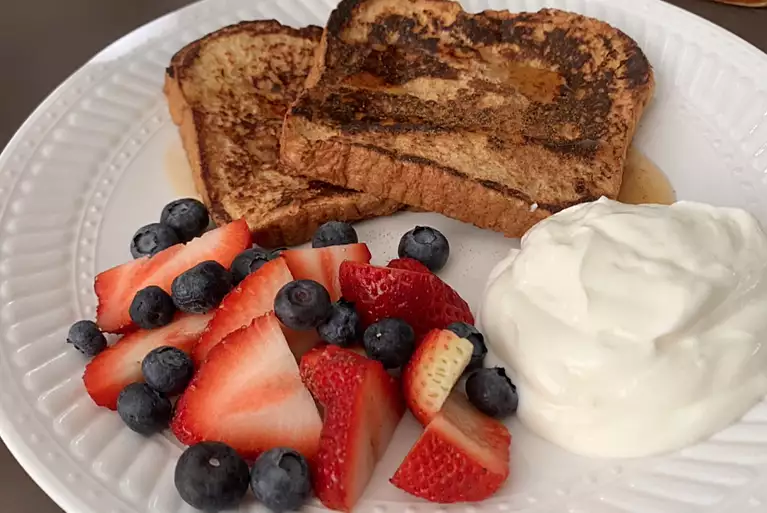

Description
Nope! French toast (pain perdu in French) isn't actually from France. Legend has it that a man named Joseph French from the U.S. created the sweet breakfast dish in 1724 and named it after himself. However, that's probably not true: People were frying milk- and egg-soaked bread in Ancient Rome, according to early recipes.
Ingradients
- ⅔ cup milk
- 2 large eggs
- 1 teaspoon vanilla extract (Optional)
- ¼ teaspoon ground cinnamon (Optional)
- salt to taste
- 6 thick slices bread
Steps
- Whisk milk, eggs, vanilla, cinnamon, and salt together in a shallow bowl.
- Lightly butter a griddle and heat over medium-high heat.Step 3
- Dunk bread in the egg mixture, soaking both sides. Transfer to the hot skillet and cook until golden, 3 to 4 minutes per side. Serve hot.